動画編集できないから発信できない…
それ、もう理由になりません。
電気工事の現場から帰ったあとのインスタ作業、正直しんどい時があって、Manus 2.0 Maxで試してみました。
素材を渡して、日本語で頼むだけ。撮っただけの動画が、テロップ入りのリールになりました。
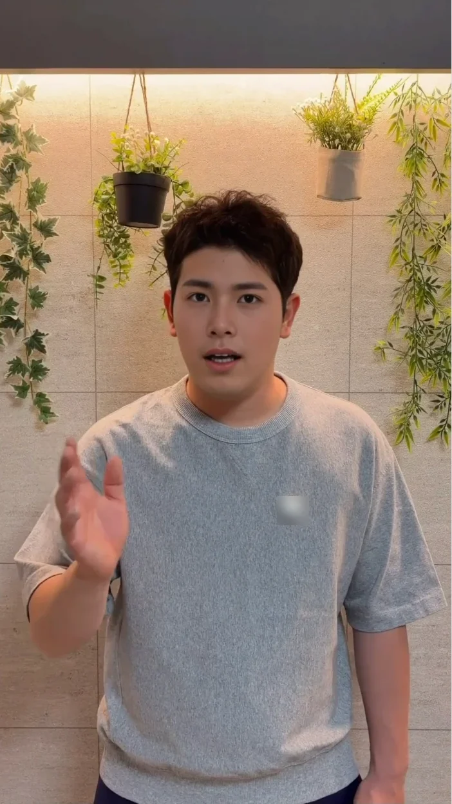
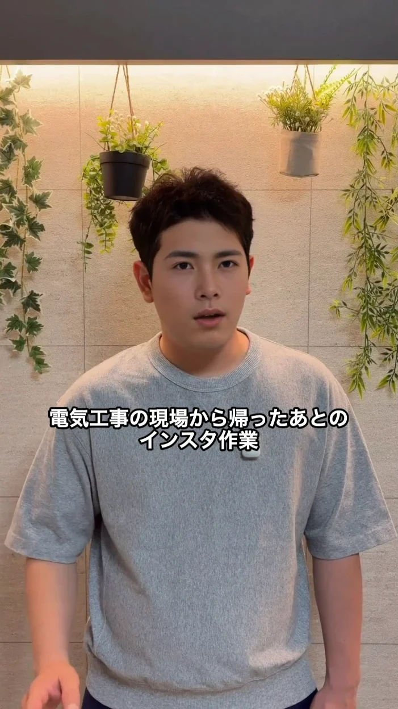
どちらも僕の実際の作業画面です。
このマニュアルでやること
- 01素材を入れて、アルケミーで頼む
- 02気になる所を、自分で直すか頼む
- 03インスタとつないで、時刻を決める
- 04届いた投稿を確かめて、ワンタップ
- MacのManusアプリ（僕はMacBook Airで作業しました）
- 話している動画など、使いたい素材
- 自分のInstagramアカウント
01素材を入れて、
アルケミーで頼む
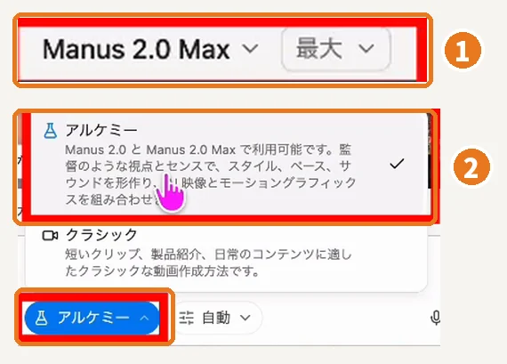
- 画面の左上で「Manus 2.0 Max」「最大」を選ぶ
- 入力欄の下の切り替えで「アルケミー」を選ぶ
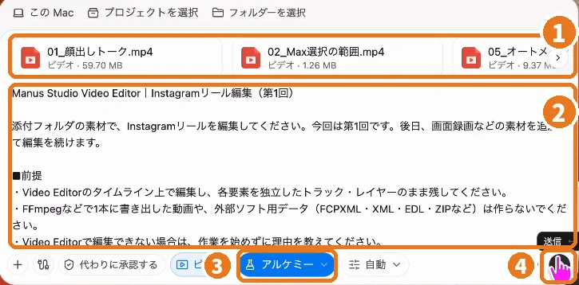
- 「この Mac」から素材の動画を追加
- 下の指示文を貼る
- 「アルケミー」になっているのを確認
- 送信
アルケミーに渡す指示文
貼る場所：素材を添付した、Manusの入力欄（アルケミー）
添付した素材で、Instagramリールを編集してください。 ■素材 ・話している動画（メイン） ・途中で見せたい画面録画や画像（あれば） ■仕上がり ・縦長（1080×1920）のリール ・話している内容に合わせて、日本語のテロップを入れる ・テロップは顔に重ならない位置に置き、1行は短めで最大2行まで ・BGMや効果音は入れない ■進め方 ・Video Editorのタイムライン上で編集し、テロップや画像はあとから直せるように、別々のトラックのまま残してください ・書き出しはせず、プレビューできる状態で止めてください ・Video Editorで編集できない場合は、作業を始めずに理由を教えてください
僕が使った指示文から、誰でも使える形に整えたものです。
進めた目印：右側にVideo Editorが開いて、テロップがタイムラインに並んでいればOK。
02気になる所は、
自分で直すか、頼む
テロップの位置や画像の差し替えなど、気になる箇所は、タイムラインで自分で直すこともできるし、Manusに頼んで修正することもできます。
自分で直す
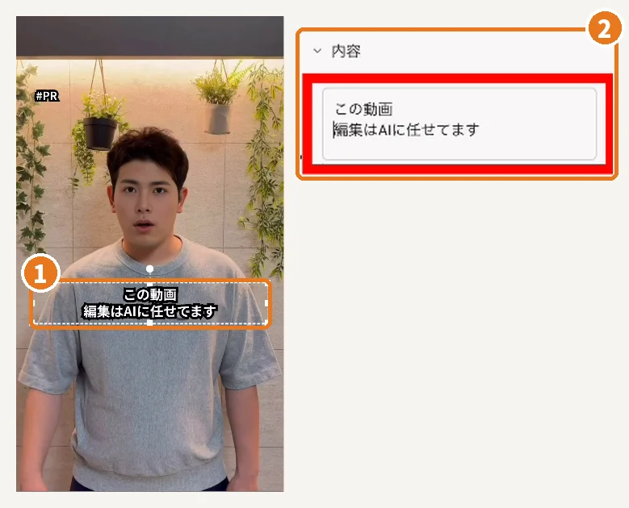
- 直したいテロップを画面でクリック
- 右の「内容」で文字を書き換える
Manusに頼む
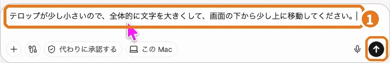
僕は、文字を大きくしたいときにこの一文を送りました。
修正をお願いする一文
貼る場所：同じ作業の画面の、Manusの入力欄
テロップが少し小さいので、全体的に文字を大きくして、画面の下から少し上に移動してください。
進めた目印：プレビューで、テロップが顔にかからず読めればOK。
03インスタとつないで、
時刻を決める
次の投稿の準備は、オートメーション機能に任せます。
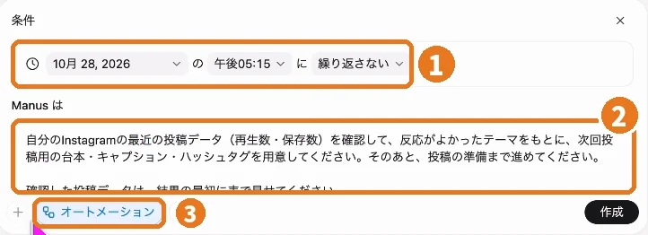
- 動かす日付と時刻を決める
- 下の指示文を貼る
- 横のボタンから設定を開く
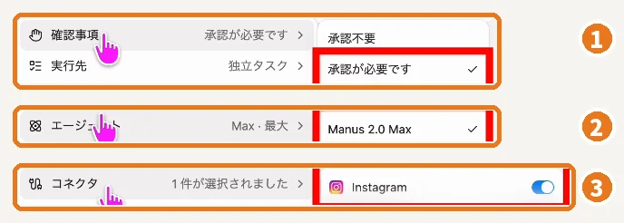
- 確認事項：「承認が必要です」
- エージェント：「Manus 2.0 Max」
- コネクタ：「Instagram」をオン
最後に「作成」を押します。
投稿まで任せることもできますが、最後の確認はしたいので、投稿だけは自分でワンタップする設定にしています。①の「承認が必要です」が、その設定です。
オートメーションに渡す指示文
貼る場所：「作業を自動化」の「Manus は」の欄
自分のInstagramの最近の投稿データ（再生数・保存数）を確認して、反応がよかったテーマをもとに、次回投稿用の台本・キャプション・ハッシュタグを用意してください。そのあと、投稿の準備まで進めてください。 確認した投稿データは、結果の最初に表で見せてください。 投稿は公開しないでください。内容を確認してから、自分で公開します。
僕が使った指示文をもとにしています。最後の一文は、自分で公開するための念押しです。
04届いた投稿を確かめて、
ワンタップ
決めた時刻になると、反応のよかったテーマを見て、台本・キャプション・ハッシュタグまで用意してくれます。
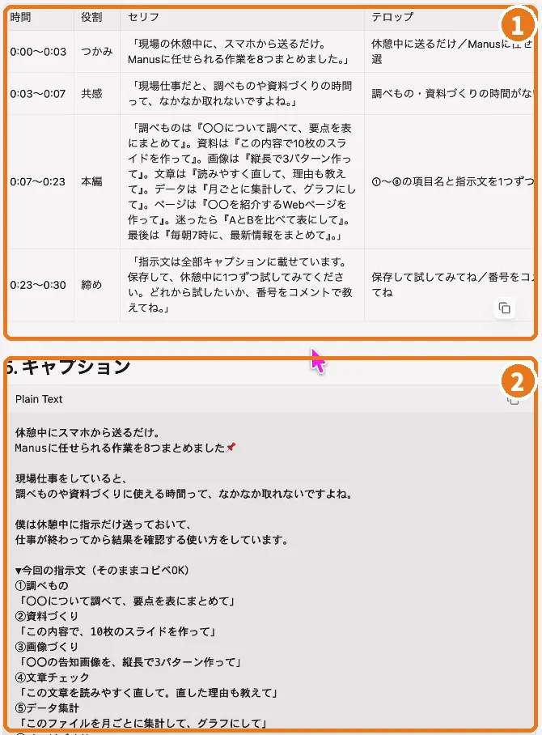
- 台本（セリフとテロップ）
- キャプション
確かめるところ：キャプションに、自分の使い方と違う一文がないか。僕のときも、Manusが「想定で書いた」と教えてくれた一文がありました。違っていたら書き換えます。
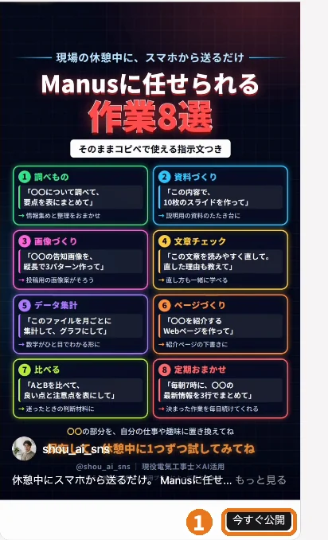
- 中身を確かめたら「今すぐ公開」を自分で押す
できた目印：自分のインスタに、その投稿が出ていれば完了です。
まずは、手元の素材1本から
最初は、話している動画1本で十分です。01でテロップ入りの動画ができるところまで、試してみてください。
Manusから、
僕のコードをいただきました
登録から3か月以内のアカウント限定で、1,000クレジットを取得可能です。
期限：2026年12月31日0:00まで
Manusでコードを使うマナスで動画づくりの時間を減らせたら、次はその時間をAIで収益につなげる番です。僕が電気工事の仕事をしながら実践してきた流れを『AIマネタイズの教科書』にまとめて、公式LINEで無料でお渡ししています。
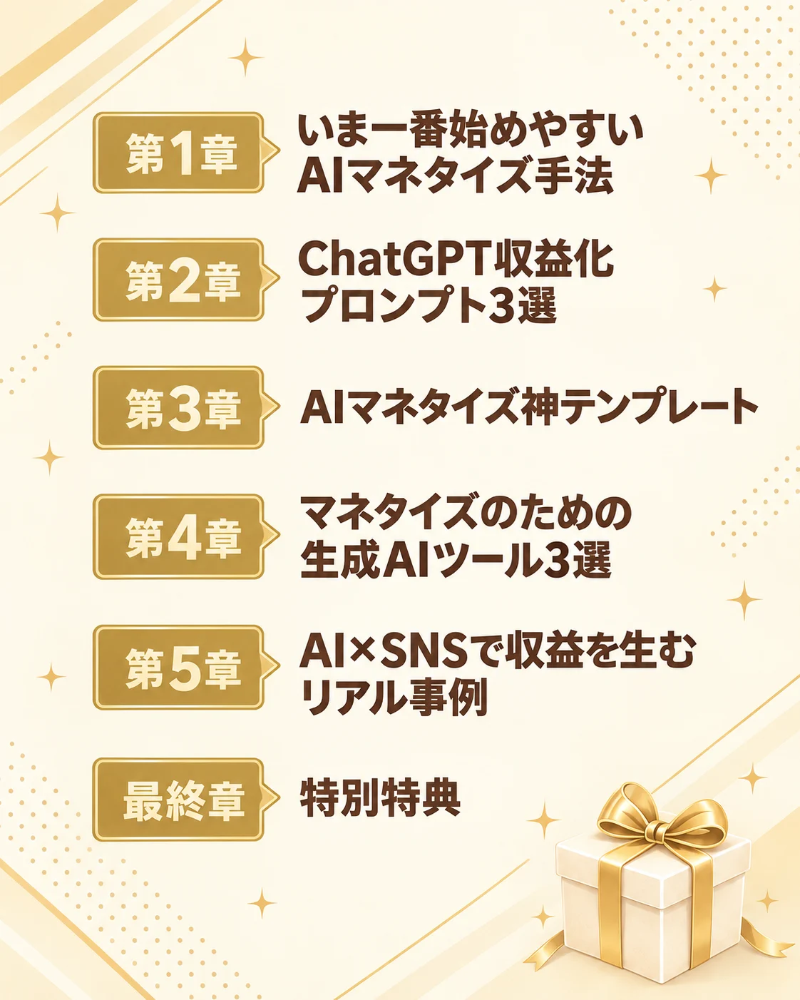
今だけ、公式LINEで無料プレゼント中です
公式LINEで無料で受け取る